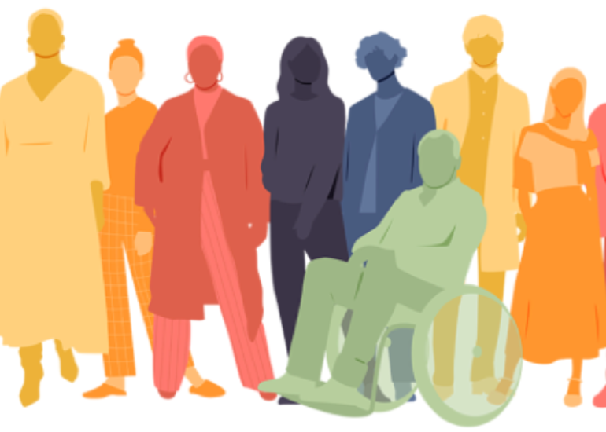

My curriculum focuses on the indivial and developing real world skills and experiences while promoting critical thinking. The goal is to foster a life long love of learning for the students
I would like to put in place policies that shift policy making more local to meet a community's diverse needs as well as empower the parents and school faculty. I would like to switch from a standarized testing to a more project based learning experience
Funding should be allocated to the individual student rather than the school district so that all kids have proper funding regardless of the school they attend. Parents should have more control over how spending on their children is done

We should embrace our rich and diverse cultures and give voice to the marginalized. A communities culture and history should promoted and diverse representation and perspectives should be heard at all levels of the education system